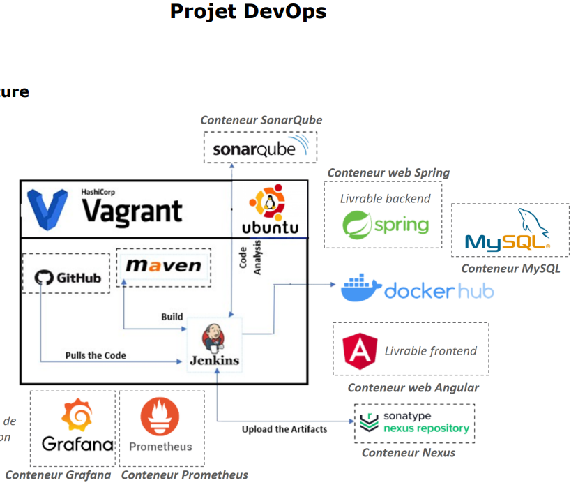

Analysis of Educational Inequalities and Illiteracy 2023-2024
Analysis of Educational Inequalities and Illiteracy in Mauritania and creation of a logistic regression predictive model to assess illiteracy status based on characteristics such as gender, age, etc.
First Place – ESP Datathon 2025: Fraud Detection

This project tackled a critical challenge: transactional fraud detection. We implemented and compared several unsupervised machine learning models, including Isolation Forest, Local Outlier Factor (LOF), and a Deep Learning Autoencoder for detecting unknown fraud patterns.
Terminal à conteneurs de Nouakchott (TCN) – 6-month Internship

Developed a web application for automated maintenance management using Django, PostgreSQL, and Docker. Features included:
- Centralization of real-time intervention reports with multi-role authentication (23 profiles)
- Dynamic forms tailored to sections (Crane, Workshop, Facility)
- Interactive KPI dashboards using Bokeh
- Automated email reminders
- AI layer for predictive maintenance (ML models, MLflow, Airflow) deployed via Jenkins CI/CD
Computer Vision Challenge

Collected and scraped over 2,000 images of Mauritanian license plates from websites such as Voursa, Facebook Marketplace, and Google Images. Developed an AI-based deep learning system for accurate license plate recognition. Challenge participation conducted by RIM-AI.
CI/CD Pipeline with Real-Time Monitoring for Spring/Angular Application
Creation and automation of a complete CI/CD pipeline: build, testing, deployment, and monitoring. Tools used: Git, Jenkins, Maven, JUnit, Nexus, SonarQube, Docker, Prometheus, Grafana.
Conversion Rate Challenge 2023-2024

Development of a predictive conversion rate model for an anonymous website, followed by recommendations for the marketing team to optimize revenue.
Intelligent Agriculture Platform Oct/2023-Now

Development of an integrated agricultural platform: crop recommendation, production forecasting, pest control, real-time weather data. Use of AI and IoT for optimal yields and sustainability.
Age and Sex Prediction from Vocal Data using Deep Learning (LSTM) 2024

Development of an LSTM-based deep learning model to predict age from vocal data. Data collected and preprocessed to train the model for accurate age prediction.
BNM_Data_Warehouse: ETL Process for Data Centralization

The BNM_Data_Warehouse project, developed for the Banque Nationale de Mauritanie (BNM), focuses on the creation and implementation of an ETL process to centralize and organize data from multiple sources. Provides a robust foundation for further data analysis and visualization.